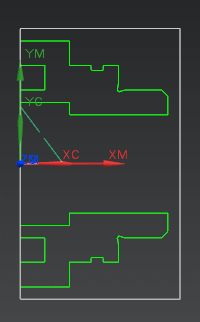

Open mnf16_85_verify_mfg_1.

Display the Program Order View of the Operation Navigator and expand all nodes.
|
Note |
Notice the material being removed. The lighter areas represent the material after the operation is complete. |
Refresh the graphics window.